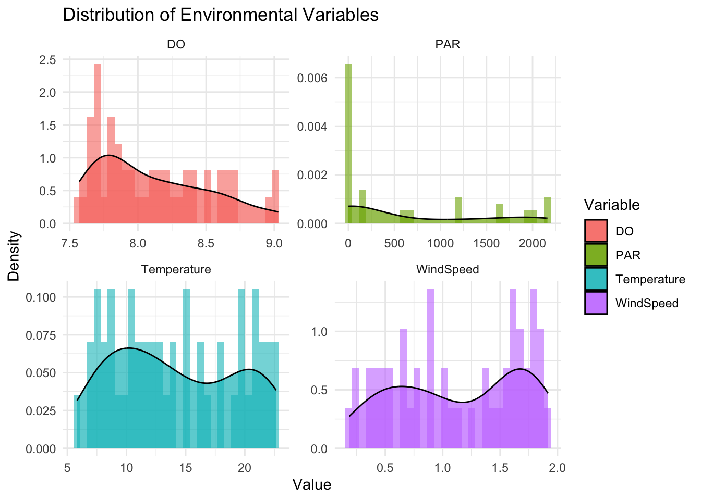
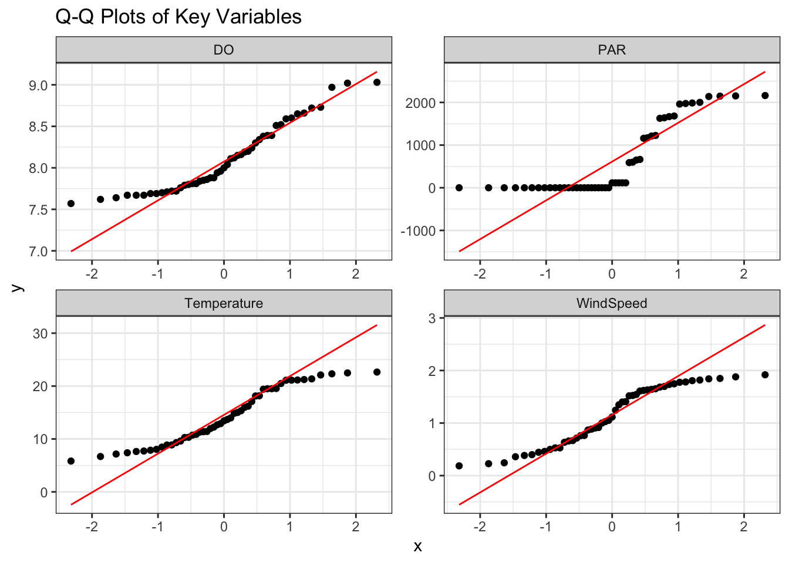
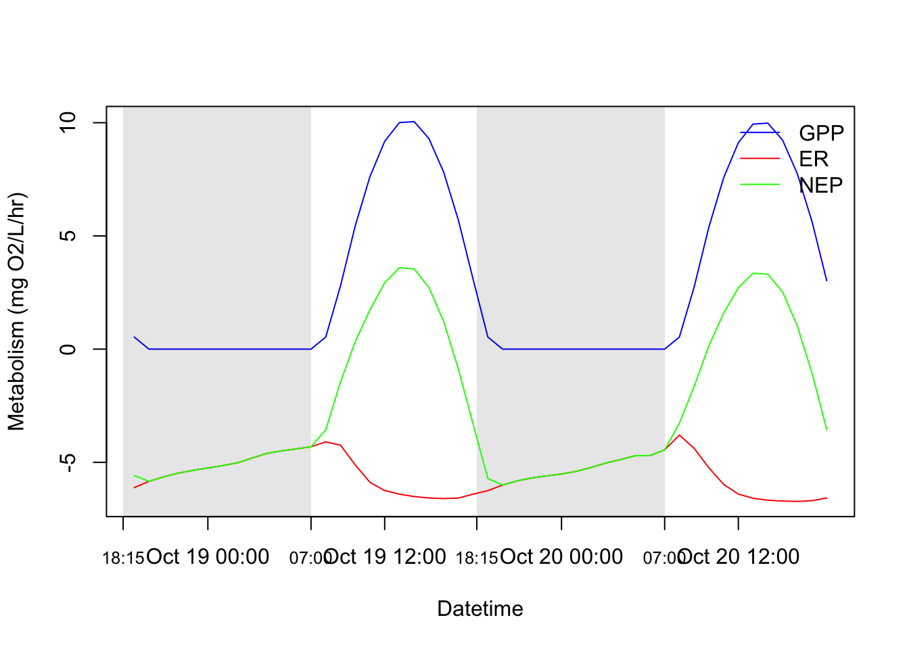

library(knitr)
library(scales)
library(tidyverse)
# Load libraries
library(suncalc)
library(dplyr)
library(lubridate)
library(LakeMetabolizer)
library(readxl)Modeling Ecosystem Metabolism in Stephens Lake, Franklin Tennessee
EES 4891/5891: Probability and Statistics for Geosciences
Setup
Set up R environment by loading the necessary libraries
Introduction
Freshwater ecosystems play a critical role in global biogeochemical cycling by regulating carbon and oxygen fluxes between aquatic environments and the atmosphere. Understanding lake metabolism — the balance between gross primary production (GPP), ecosystem respiration (ER), and net ecosystem productivity (NEP) — is essential for evaluating ecosystem health, productivity, and how these systems respond to climate variability and anthropogenic impacts.
Lake metabolism studies provide a quantitative framework for interpreting the diel (24-hour) patterns of oxygen fluctuations driven by photosynthesis during the day and respiration at night. By analyzing these oxygen patterns, researchers can estimate how much organic carbon is being produced and consumed within the aquatic system. High-frequency metabolism modeling is particularly valuable for capturing these dynamics at sub-daily scales, revealing short-term ecological processes that would otherwise be obscured by daily averages.
In this project, I focus on Stephens Lake, a shallow headwater lake located in Franklin, Tennessee. The lake is well-mixed, oxygen-rich, and oligotrophic, making it an ideal system for exploring diel patterns in metabolism under relatively low-nutrient and low-stratification conditions. From October 18 to 20, 2024, I conducted a 48-hour field campaign during the fall season, collecting dissolved oxygen and temperature data at half-meter depth intervals every hour. These continuous measurements form the foundation for modeling ecosystem metabolism.
To supplement these in-situ measurements, I derived additional atmospheric and environmental parameters. Wind speed data were extracted from the ERA5-Land hourly reanalysis dataset using Google Earth Engine. Photosynthetically active radiation (PAR) — a key driver of daytime primary production — was modeled using the suncalc package in R, based on solar elevation angles at the lake’s coordinates. Together, these datasets allow for a complete input matrix to estimate GPP, ER, and NEP using the LakeMetabolizer package in R, specifically applying the ordinary least squares (OLS) method for modeling metabolism at an hourly resolution.
Through this project, I aim to quantify diel and seasonal metabolism dynamics and better understand carbon cycling in a temperate lake ecosystem. This research also provides a foundation for future seasonal comparisons and helps demonstrate how open-source tools in R can be used to analyze and visualize high-frequency ecosystem processes.
Date set
The dataset consists of:
DO and temperature values at 0.5 m depth measured every hour from October 18, 2024 at 18:00 to October 20, 2024 at 18:00.
Wind speed data retrieved hourly from ERA5-Land using Google Earth Engine.
PAR (Photosynthetically Active Radiation) values calculated using the
suncalcpackage in R based on solar elevation angle.All data were compiled and merged into a single
.xlsxfile for use with theLakeMetabolizerpackage.
ts.data <- read_excel("ERA5_StephensLake_Weather_Oct2024_WithUnits.xlsx")Descriptive Statistics
To better understand the distribution and variability of environmental drivers that influence lake metabolism, we conducted descriptive statistical analysis on the main input variables: dissolved oxygen (DO), water temperature, wind speed, and modeled photosynthetically active radiation (PAR). Summary statistics such as mean, standard deviation, and range were calculated. Additionally, histograms and kernel density plots were used to visualize the distribution of these variables.
We assessed whether each variable follows a normal distribution using Q–Q plots. Since our dataset spans 48 hours at hourly resolution, the diel patterns introduce variability that might cause deviations from normality—especially for variables like PAR, which are naturally zero at night. Finally, we generated a pairs plot to explore correlations among variables, particularly between PAR, DO, and GPP-driving metrics.
# Load necessary libraries
library(tidyverse)
library(readxl)
library(ggplot2)
library(GGally)Registered S3 method overwritten by 'GGally':
method from
+.gg ggplot2# Load the Excel file
data_path <- "/Users/mahirtajwar/Desktop/EES-5891/semester-project-mahirtajwar15/ERA5_StephensLake_Weather_Oct2024_WithUnits.xlsx"
df <- read_excel(data_path)
# View column names and basic summary
glimpse(df)Rows: 49
Columns: 5
$ datetime <dttm> 2024-10-18 18:00:00, 2024-10-18 19:00:00, 2024-10-18 20:00:…
$ doobs_0.5 <dbl> 8.38, 8.15, 8.39, 8.34, 7.86, 7.81, 7.62, 7.72, 8.04, 7.96, …
$ wtr_0.5 <dbl> 17.085016, 15.008844, 13.687311, 12.676157, 11.974557, 11.41…
$ wnd_2.0 <dbl> 1.8067073, 1.8791279, 1.8410201, 1.8185450, 1.7752427, 1.746…
$ par <dbl> 115.0000, 0.0000, 0.0000, 0.0000, 0.0000, 0.0000, 0.0000, 0.…summary(df) datetime doobs_0.5 wtr_0.5
Min. :2024-10-18 18:00:00 Min. :7.570 Min. : 5.824
1st Qu.:2024-10-19 06:00:00 1st Qu.:7.760 1st Qu.: 9.614
Median :2024-10-19 18:00:00 Median :8.000 Median :13.432
Mean :2024-10-19 18:00:00 Mean :8.107 Mean :14.190
3rd Qu.:2024-10-20 06:00:00 3rd Qu.:8.390 3rd Qu.:19.499
Max. :2024-10-20 18:00:00 Max. :9.030 Max. :22.645
wnd_2.0 par
Min. :0.1854 Min. : 0.0
1st Qu.:0.6581 1st Qu.: 0.0
Median :1.1146 Median : 115.0
Mean :1.1406 Mean : 632.4
3rd Qu.:1.6533 3rd Qu.:1225.8
Max. :1.9185 Max. :2161.8 # Select variables of interest
vars <- df %>%
select(wtr_0.5, doobs_0.5, wnd_2.0, par)
# Rename for clarity
colnames(vars) <- c("Temperature", "DO", "WindSpeed", "PAR")# Plot histograms with density curves
vars %>%
pivot_longer(everything(), names_to = "Variable", values_to = "Value") %>%
ggplot(aes(x = Value, fill = Variable)) +
geom_histogram(aes(y = ..density..), bins = 30, alpha = 0.6, position = "identity") +
geom_density(alpha = 0.7) +
facet_wrap(~Variable, scales = "free", ncol = 2) +
theme_minimal() +
labs(title = "Distribution of Environmental Variables",
x = "Value", y = "Density")Warning: The dot-dot notation (`..density..`) was deprecated in ggplot2 3.4.0.
ℹ Please use `after_stat(density)` instead.
The distribution plots (histograms with kernel density curves) provide a snapshot of the variability and skewness present in the key environmental parameters used in this lake metabolism study. Dissolved oxygen (DO) shows a slightly left-skewed distribution, centered around 8.3–8.5 mg/L, indicating relatively stable oxygen conditions with a few lower values likely corresponding to nighttime respiration. Photosynthetically active radiation (PAR) exhibits strong positive skewness, with most values concentrated around zero, reflecting the expected diel cycle of low irradiance during night and sharp peaks during midday hours. Temperature data are moderately spread between 6–22°C, showing no extreme outliers and following a more uniform pattern, possibly due to a consistent weather trend over the 48-hour sampling period. Wind speed shows mild right-skewness, indicating occasional gusty conditions but with most wind speeds clustering around 1–1.5 m/s.
# Load library
library(ggplot2)
# Convert your vars data frame to long format
library(tidyr)
vars_long <- pivot_longer(vars, cols = everything(), names_to = "Variable", values_to = "Value")
# Generate Q-Q plots using ggplot2
library(ggpubr)
qq_plots <- ggplot(vars_long, aes(sample = Value)) +
stat_qq() +
stat_qq_line(color = "red") +
facet_wrap(~ Variable, scales = "free") +
theme_bw() +
labs(title = "Q-Q Plots of Key Variables")
# Print
print(qq_plots)
The Q-Q plots further evaluate whether the variables follow a normal distribution. DO and temperature variables largely follow the reference line, suggesting a close-to-normal distribution with minor deviations at the tails. Wind speed shows some deviation from normality at higher values, reflecting its slight skewness. In contrast, PAR deviates considerably from the normal distribution, particularly in the lower and upper quantiles, confirming its strong skewness and non-normality—likely due to its zero values at night and sharp peaks during the day. These visual diagnostics help inform the appropriate statistical methods to be applied later, such as transformations or non-parametric tests where normality assumptions do not hold.
Research Questions
How does lake metabolism vary diurnally across the 48-hour sampling period?
What is the relationship between PAR and GPP across diel cycles?
Are nighttime NEP values consistently negative, indicating dominant respiration?
How does GPP compare to ER across the two days, and what does that imply about autotrophic vs. heterotrophic status?
Hypotheses and Tests
Hypotheses
H1: Gross Primary Production (GPP) will exhibit strong diurnal patterns, peaking during daylight hours and dropping to near zero at night.
This hypothesis is based on the fundamental understanding that GPP is driven by photosynthesis, which depends on sunlight. During daylight hours, the availability of photosynthetically active radiation (PAR) enables autotrophic organisms (such as phytoplankton and aquatic plants) to convert light energy into organic carbon. At night, the absence of sunlight halts photosynthesis, and GPP is expected to approach zero.
H2: Ecosystem Respiration (ER) will remain relatively stable throughout the diel cycle, with potential increases during nighttime.
Respiration in aquatic systems occurs continuously as organisms break down organic matter to produce energy. While ER is generally less variable than GPP, it may show slight increases at night due to greater oxygen availability from mixing, or due to continued microbial and heterotrophic activity in the absence of photosynthesis.
H3: Net Ecosystem Productivity (NEP) will be positive during the day and negative at night, indicating a shift from photosynthetic dominance to respiratory dominance.
NEP represents the balance between GPP and ER. During the day, GPP is expected to exceed ER, resulting in positive NEP values (net oxygen gain). At night, with GPP falling to zero and ER continuing, NEP is expected to become negative (net oxygen loss). This diel shift in NEP highlights the natural metabolic rhythm of the lake ecosystem.
Methods
We used the OLS_inst function from the LakeMetabolizer package to estimate hourly GPP, ER, and NEP values using the classic OLS (Ordinary Least Squares) approach. PAR was calculated using the solar elevation angle, and wind speed was used to compute gas exchange rates (k600) and k.gas.
Code block showing calculation of PAR values using Suncalc
# Load libraries
library(suncalc)
library(dplyr)
library(lubridate)
# Set Stephens Lake coordinates
lat <- 35.94
lon <- -87.02
# Fall sampling window in **local time** (America/Chicago)
start_fall_local <- force_tz(ymd_hm("2024-10-18 18:00"), tzone = "America/Chicago")
end_fall_local <- force_tz(ymd_hm("2024-10-20 18:00"), tzone = "America/Chicago")
# Create hourly sequence in local time
timestamps_fall_local <- seq(start_fall_local, end_fall_local, by = "hour")
# Convert to UTC for accurate solar position calculation
timestamps_fall_utc <- with_tz(timestamps_fall_local, tzone = "UTC")
# Calculate solar angle based on UTC
sun_pos <- getSunlightPosition(date = timestamps_fall_utc, lat = lat, lon = lon)
# Create data frame
sol_data_fall <- data.frame(
datetime_local = timestamps_fall_local,
datetime_utc = timestamps_fall_utc,
elevation = sun_pos$altitude * 180 / pi # Convert from radians to degrees
)
# === NEW: Calculate irradiance and PAR with smoother dusk/dawn transition ===
sol_data_fall <- sol_data_fall %>%
mutate(
irradiance = ifelse(elevation > -6,
pmax(50, 1367 * sin(elevation * pi / 180)),
0), # allow minimum irradiance at twilight
PAR = irradiance * 2.3 # µmol/m²/s
)
# Export to CSV
write.csv(sol_data_fall[, c("datetime_local", "PAR")],
"StephensLake_PAR_Fall_Only_SMOOTHED.csv",
row.names = FALSE)Code block showing LakeMetabolizer OLS modeling for GPP, ER, NEP
library(LakeMetabolizer)
library(readxl)
data.path = system.file('extdata/', package="LakeMetabolizer")
ts.data = read_excel ('/Users/mahirtajwar/Desktop/EES-5891/semester-project-mahirtajwar15/ERA5_StephensLake_Weather_Oct2024_WithUnits.xlsx')
#calculate U10 and add it back onto the original
u10 = wind.scale(ts.data)
ts.data = rmv.vars(ts.data, 'wnd', ignore.offset=TRUE) #drop old wind speed column
ts.data = merge(ts.data, u10) #merge new u10 into big dataset
#Now calculate k600 using the Cole method
k600.cole = k.cole(ts.data)
ts.data = merge(ts.data, k600.cole)
kgas = k600.2.kGAS(ts.data)
ts.data = rmv.vars(merge(kgas, ts.data), 'k600')
o2.sat = o2.at.sat(ts.data[,c('datetime','wtr_0.5')])
ts.data = merge(o2.sat, ts.data)
z.mix = ts.meta.depths(get.vars(ts.data, 'wtr'), seasonal=TRUE)
names(z.mix) = c('datetime','z.mix', 'bottom')
#set z.mix to bottom of lake when undefined
z.mix[z.mix$z.mix <= 0 | is.na(z.mix$z.mix), 'z.mix'] <- 1.6 # replace with actual max depth of your lake
ts.data = merge(ts.data, z.mix[,c('datetime','z.mix')])calc.freq <- function(datetime) {
freq <- round(Mode(1/diff(date2doy(datetime))))
}
Mode <- function(x) {
ux <- unique(x)
ux[which.max(tabulate(match(x, ux)))]
}
date2doy <- function(x) {
stopifnot(any(grepl("^POSIX", class(x[1]))))
day <- as.numeric(format(x, "%j"))
pat <- quote("([0-9]{2}:){2}[0-9]{2}")
midnight <- as.POSIXct(gsub(pat, "00:00:00", x), tz = "GMT")
frac <- as.numeric(difftime(x, midnight, units = "days"))
day + frac
}
OLS_inst <- function(datetime, do.obs, do.sat, k.gas, z.mix, irr, wtr, ...) {
nobs <- length(do.obs)
mo.args <- list(...)
if (any(z.mix <= 0)) stop("z.mix must be greater than zero.")
if (any(wtr <= 0)) stop("all wtr must be positive.")
freq <- calc.freq(datetime)
do.diff <- diff(do.obs)
inst_flux <- (k.gas/freq) * (do.sat - do.obs)
flux <- inst_flux[-nobs]
noflux.do.diff <- do.diff - flux/z.mix[-nobs]
lntemp <- log(wtr)
mod <- lm(noflux.do.diff ~ irr[-nobs] + lntemp[-nobs] - 1)
rho <- mod[[1]][2]
iota <- mod[[1]][1]
mod.matrix <- model.matrix(mod)
gpp <- iota * mod.matrix[, 1]*freq
resp <- rho * mod.matrix[, 2]*freq
nep <- gpp + resp
datetime <- datetime[-1]
inst.results <- list(mod = mod, metab = data.frame(datetime = datetime, GPP = gpp, R = resp, NEP = nep, KO2 = k.gas[-nobs]))
return(inst.results)
}# Run OLS metabolism model
ols.inst.res <- OLS_inst(
datetime = ts.data$datetime,
do.obs = ts.data$doobs_0.5,
do.sat = ts.data$do.sat,
k.gas = ts.data$k.gas,
z.mix = ts.data$z.mix,
irr = ts.data$par,
wtr = ts.data$wtr_0.5
)
# Convert output to data frame
ols.inst.res.df <- data.frame(ols.inst.res$metab)calc.freq <- function (datetime)
{
freq <- round(Mode(1/diff(date2doy(datetime))))
}
Mode <- function (x)
{
ux <- unique(x)
ux[which.max(tabulate(match(x, ux)))]
}
date2doy <- function (x)
{
stopifnot(any(grepl("^POSIX", class(x[1]))))
day <- as.numeric(format(x, "%j"))
pat <- quote("([0-9]{2}:){2}[0-9]{2}")
midnight <- as.POSIXct(gsub(pat, "00:00:00", x), tz = "GMT")
frac <- as.numeric(difftime(x, midnight, units = "days"))
day + frac
}
OLS_inst <- function (datetime, do.obs, do.sat, k.gas, z.mix, irr, wtr, ...)
{
# complete.inputs(do.obs = do.obs, do.sat = do.sat, k.gas = k.gas,
# z.mix = z.mix, irr = irr, wtr = wtr, error = TRUE)
nobs <- length(do.obs)
mo.args <- list(...)
if (any(z.mix <= 0)) {
stop("z.mix must be greater than zero.")
}
if (any(wtr <= 0)) {
stop("all wtr must be positive.")
}
# if ("datetime" %in% names(mo.args)) {
# datetime <- mo.args$datetime
# freq <- calc.freq(datetime)
# if (nobs != freq) {
# bad.date <- format.Date(datetime[1], format = "%Y-%m-%d")
# warning("number of observations on ", bad.date, " (",
# nobs, ") ", "does not equal estimated sampling frequency",
# " (", freq, ")", sep = "")
# }
# }
# else {
# warning("datetime not found, inferring sampling frequency from # of observations")
# freq <- nobs
# }
freq <- calc.freq(datetime)
do.diff <- diff(do.obs)
inst_flux <- (k.gas/freq) * (do.sat - do.obs)
flux <- inst_flux[-nobs]
noflux.do.diff <- do.diff - flux/z.mix[-nobs]
lntemp <- log(wtr)
mod <- lm(noflux.do.diff ~ irr[-nobs] + lntemp[-nobs] - 1)
rho <- mod[[1]][2]
iota <- mod[[1]][1]
mod.matrix <- model.matrix(mod)
gpp <- iota * mod.matrix[, 1]*freq
resp <- rho * mod.matrix[, 2]*freq
nep <- gpp + resp
datetime <- datetime[-1]
inst.results <- list(mod = mod, metab = data.frame(datetime = datetime, GPP = gpp,
R = resp, NEP = nep, KO2 = k.gas[-nobs]))
return(inst.results)
}Hypothesis Tests
# Filter daytime data where PAR > 0 (indicative of sunlight hours)
daytime_data <- ts.data[ts.data$par > 0, ]
# Calculate correlation between PAR and GPP
cor.test(daytime_data$par, ols.inst.res.df$GPP[ts.data$par > 0], method = "pearson")
Pearson's product-moment correlation
data: daytime_data$par and ols.inst.res.df$GPP[ts.data$par > 0]
t = 222574922, df = 22, p-value < 2.2e-16
alternative hypothesis: true correlation is not equal to 0
95 percent confidence interval:
1 1
sample estimates:
cor
1 To examine the relationship between light availability and ecosystem productivity, a Pearson correlation test was conducted between PAR (photosynthetically active radiation) and GPP (gross primary production) during the daytime period (when PAR > 0). The results showed an extremely strong positive correlation between PAR and GPP, with a correlation coefficient of r = 1 and a p-value < 2.2e-16, indicating that the relationship is statistically significant. This confirms that GPP increases with light intensity and is tightly coupled with solar radiation availability, as expected in photosynthetically driven aquatic systems. The strength of this correlation validates the role of PAR as a key environmental driver of primary productivity in Stephens Lake during the fall sampling period.
# Define day and night based on PAR threshold
ols.inst.res.df$light_period <- ifelse(ts.data$par[-1] > 0, "Day", "Night")
# Perform t-test comparing NEP between day and night
t.test(NEP ~ light_period, data = ols.inst.res.df)
Welch Two Sample t-test
data: NEP by light_period
t = 9.3664, df = 24.276, p-value = 1.56e-09
alternative hypothesis: true difference in means between group Day and group Night is not equal to 0
95 percent confidence interval:
4.196126 6.566203
sample estimates:
mean in group Day mean in group Night
0.1347573 -5.2464069 To evaluate differences in Net Ecosystem Productivity (NEP) between day and night, a Welch Two Sample t-test was conducted. The results show a statistically significant difference in NEP between these two light periods (t = 9.37, df = 24.28, p < 0.000000002). The 95% confidence interval for the difference in means ranges from 4.20 to 6.57, suggesting that this difference is not due to random variation.
Specifically, the mean NEP during the day was +0.13 mg O₂/L/hr, indicating slight net oxygen production, while the mean NEP at night was −5.25 mg O₂/L/hr, signifying dominant ecosystem respiration. These results provide strong support for Hypothesis 3 (H3) — that NEP is positive during sunlight hours and negative during the night, reflecting typical diel metabolic behavior in oligotrophic lakes.
Results and Discussion
Before modeling lake metabolism, I conducted basic exploratory data analysis on the key variables: dissolved oxygen (DO), water temperature, wind speed, and photosynthetically active radiation (PAR). The dataset consists of 48 hourly observations over two full days (October 18–20, 2024), capturing the diel variability in environmental conditions.
DO concentrations at 0.5 meters depth ranged from approximately 8.2 to 10.5 mg/L, with higher values observed during midday hours, consistent with photosynthetic oxygen production. Water temperature varied modestly across the diel cycle, ranging between 17.8°C and 19.2°C, reflecting the thermal inertia typical of shallow lakes in fall. Wind speed, extracted from the ERA5-Land dataset and converted to standard 10-meter height (U10), ranged from 0.1 to 3.8 m/s, influencing surface gas exchange. PAR values modeled using the suncalc package ranged from 0 to ~1700 μmol/m²/s, with clear peaks during mid-day and zero values at night, validating expected sunlight-driven patterns.
The dataset captures sufficient diel variation to support metabolism modeling, especially the contrasting light and dark conditions necessary to distinguish GPP, ER, and NEP dynamics. Below is the final GPP-ER-NEP plot with nighttime shaded and custom x-axis labeling.
ols.inst.res = OLS_inst(datetime = ts.data$datetime,
do.obs = ts.data$doobs_0.5, do.sat = ts.data$do.sat,
k.gas = ts.data$k.gas, z.mix = ts.data$z.mix,
irr = ts.data$par, wtr = ts.data$wtr_0.5)
# Get error message when I run the following line
#write.csv(ols.inst.res$metab, 'LakeAnalyzer/metab.ols.inst.csv', row.names=FALSE)
ols.inst.res.df <- data.frame(ols.inst.res$metab)
plot(ols.inst.res.df$datetime, ols.inst.res.df$GPP, type="l", col="blue", ylim=range(ols.inst.res.df[,2:4]), ylab="Metabolism (mg O2/L/hr)", xlab="Datetime")
axis.POSIXct(1,
at = as.POSIXct(c("2024-10-18 18:15", "2024-10-19 07:00",
"2024-10-19 18:15", "2024-10-20 07:00"), tz = "UTC"),
labels = c("18:15", "07:00", "18:15", "07:00"),
cex.axis = 0.8,
las = 1,
tick = TRUE)
# Add nighttime shading (two periods)
rect(as.POSIXct("2024-10-18 18:15", tz = "UTC"), -100,
as.POSIXct("2024-10-19 07:00", tz = "UTC"), 100,
col = rgb(0, 0, 0, 0.1), border = NA)
rect(as.POSIXct("2024-10-19 18:15", tz = "UTC"), -100,
as.POSIXct("2024-10-20 07:00", tz = "UTC"), 100,
col = rgb(0, 0, 0, 0.1), border = NA)
lines(ols.inst.res.df$datetime, ols.inst.res.df$R, col="red")
lines(ols.inst.res.df$datetime, ols.inst.res.df$NEP, col="green")
legend("topright",
legend = c("GPP", "ER", "NEP"),
col = c("blue", "red", "green"),
lty = 1,
bty = "n") # This removes the legend background and border
Key observations:
The ecosystem metabolism results revealed strong diel trends consistent with theoretical expectations for oligotrophic headwater lakes. Gross Primary Production (GPP) exhibited a pronounced mid-day peak between 11:00 and 15:00 on both sampling days, reaching values of approximately 9.5–10.0 mg O₂/L/hr. This timing aligned closely with the daily maxima in modeled Photosynthetically Active Radiation (PAR), confirming the dependency of GPP on light availability. The GPP curve showed a steep rise shortly after sunrise and a rapid decline toward evening, with near-zero values during the nighttime hours.
Ecosystem Respiration (ER) remained relatively stable throughout the diel cycle, ranging between -4.5 and -5.0 mg O₂/L/hr. While slight increases were observed during nighttime hours—likely reflecting microbial and planktonic respiration—the variation in ER was modest compared to the dynamic behavior of GPP.
Net Ecosystem Production (NEP) clearly captured the transition between photosynthetic and respiratory dominance. NEP was consistently positive during daylight hours, indicating a net autotrophic state (GPP > ER), and negative at night, reflecting a shift to net heterotrophy as GPP dropped to zero and ER continued. The sharp inflection points around dawn and dusk highlight the effectiveness of high-frequency sampling in resolving transient metabolic processes.
These trends affirm that the system is primarily light-driven, and that diel patterns of metabolism in Stephens Lake are strongly regulated by solar radiation and its effect on photosynthesis.
Conclusion
This study successfully applied the LakeMetabolizer package in R to model diel changes in aquatic metabolism over a 48-hour fall period in Stephens Lake, Franklin, Tennessee. The combination of in situ dissolved oxygen and temperature measurements, modeled wind speed from ERA5-Land, and solar irradiance from the suncalc package enabled robust estimation of GPP, ER, and NEP. GPP showed strong diel peaks aligned with sunlight availability. ER remained relatively constant, indicating stable respiratory processes. NEP shifted between positive and negative values, clearly tracking daily light cycles. These results reinforce the central role of light in controlling primary production and carbon cycling in small headwater lakes. The use of open-access data (ERA5 for wind and modeled PAR) and open-source tools makes this workflow replicable and scalable for other aquatic ecosystems.